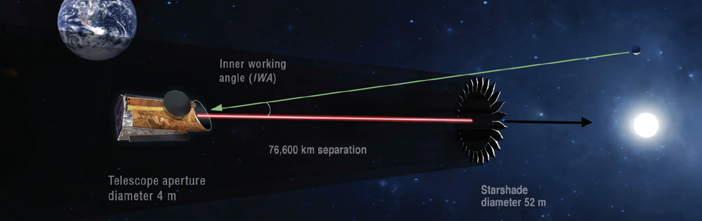

UK community perspectives on HWO
A quick survey to gauge UK interest in the NASA-proposed Habitable Worlds Observatory

The Habitable Worlds Observatory (HWO) is the successor to the Hubble Space Telescope and the James Webb Space Telescope. It is the telescope likely to yield the first images and biosignature detections from habitable zone exo-Earth twins and will also have a broad impact across all fields of Astrophysics. The mission is led by NASA, but other space agencies (including ESA) will likely buy in at some (yet undetermined) level. In the last year, GOMaP (Great Observatory Mission and Technology Maturation Process) - START (Science, Technology, and Architecture Review Team) efforts have kicked off, with a wide range of working groups dedicated to further defining the telescope architecture and science cases for HWO. The GOMaP-START efforts, while open to international collaboration, are largely US-based and much of the eventual instrumentation for HWO will be built in the US. Three instruments are planned for HWO, with potential for a 4th. The UK has played a leading role in previous space missions by contributing key hardware – for instance, the MIRI instrument for JWST was built at the UK Astronomy Technology Centre and this contribution enabled UK scientists to play a driving role in JWST science. UK contributions to HWO instrumentation could help ensure a leading role for UK scientists in HWO science.
The survey
The goal of this survey is to determine the interests and priorities of the UK exoplanet community with respect to HWO, as well as the level of participation in the UK in the ongoing GOMaP-START efforts. Areas of consensus across the community in the survey may identify scientific / technical areas where the UK could provide a substantial national contribution and thus serve as a basis for organisation of the community in approaching UKSA and other UK-based funding agencies regarding potential UK contributions to HWO.
This survey is completely anonymous and should take <5 minutes to complete. It consists of two sections: word-limited responses to a short series of questions and space for additional feedback.
Who we are
We are a group of people interested in exoplanet science with HWO, and we want to ensure that the UK Exoplanet Community is well represented in the current ongoing discussions, as this may be important for potential future UK hardware/science involvement in the mission. This survey is designed to ensure we capture the opinions of the whole community rather than the subset we represent.
Suzanne Aigrain, Jo Barstow, Beth Biller, Jayne Birkby, Vincent van Eylen, Sasha Hinkley, Annelies Mortier, Hannah Wakeford